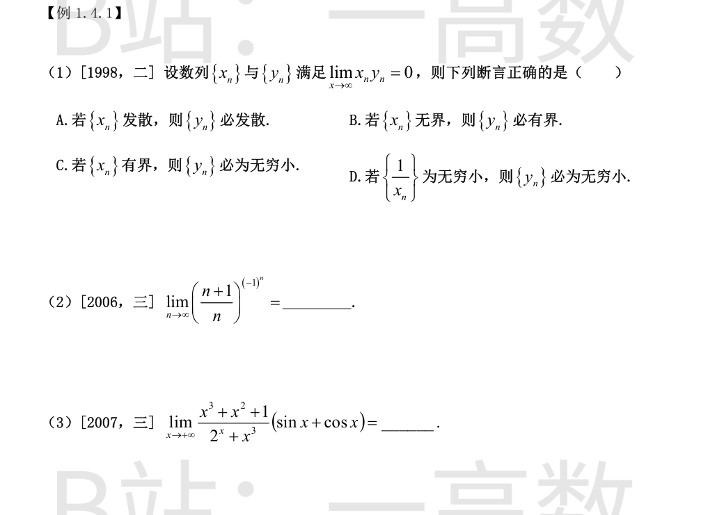
**判断依据**：正确选项为 D。
- D 成立：{1/x_n} 为无穷小即 x_n → ∞（|x_n|→∞）。于是
$$y_n=(x_n y_n)\cdot\frac{1}{x_n}\to 0\cdot 0=0,$$
由乘积极限运算法则，{y_n} 必为无穷小。
- A 错：反例 x_n=n（发散），y_n≡0（收敛），x_n y_n≡0→0。
- B 错：反例 x_{2k}=k, x_{2k+1}=0；y_{2k}=0, y_{2k+1}=k，则 x_n y_n≡0→0，但 {x_n},{y_n} 都无界。
- C 错：反例 x_n≡0（有界），y_n≡1 不是无穷小，而 x_n y_n≡0→0。
底数 (n+1)/n = 1+1/n → 1，指数 (-1)^n 只取 ±1（有界），属 1^{有界} 型。
$$\left(\frac{n+1}{n}\right)^{(-1)^n}=e^{(-1)^n\ln\left(1+\frac1n\right)},$$
而 $$\left|(-1)^n\ln\left(1+\frac1n\right)\right|\le\ln\left(1+\frac1n\right)\to 0,$$
故指数趋于 0，极限为 e^0 = 1。
也可分子列验证：偶数项 (1+1/n)^1 → 1；奇数项 (1+1/n)^{-1} = n/(n+1) → 1。两子列极限均为 1，故原极限 = 1。
x→+∞ 时指数函数 2^x 增长远快于幂函数 x³：
$$\frac{x^3+x^2+1}{2^x+x^3}=\frac{x^3+x^2+1}{2^x}\cdot\frac{1}{1+x^3/2^x}\to 0\cdot\frac{1}{1+0}=0,$$
其中 lim_{x→+∞} x³/2^x = 0（幂函数比指数函数）。
而 |sin x + cos x| ≤ √2 有界。无穷小量与有界量之积仍为无穷小量，故原极限 = 0。
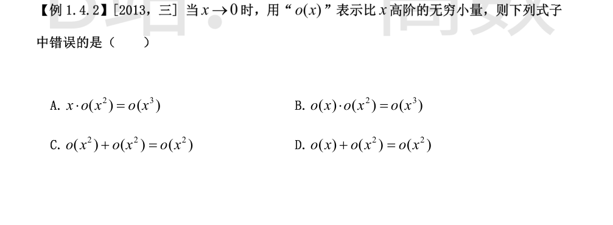
按定义逐一验证（检验左端除以右端是否趋于 0）：
A. $$\frac{x\cdot o(x^2)}{x^3}=\frac{o(x^2)}{x^2}\to 0,$$ 正确。
B. $$\frac{o(x)\cdot o(x^2)}{x^3}=\frac{o(x)}{x}\cdot\frac{o(x^2)}{x^2}\to 0\cdot 0=0,$$ 正确。
C. $$\frac{o(x^2)+o(x^2)}{x^2}\to 0,$$ 正确（两个同阶高阶量相加仍为该阶高阶量）。
D. o(x)/x² 未必趋于 0。反例：取 o(x) = x^{3/2}（因 x^{3/2}/x = x^{1/2} → 0），但
$$\frac{o(x)}{x^2}=\frac{x^{3/2}}{x^2}=x^{-1/2}\to+\infty.$$
故 o(x)+o(x²) = o(x²) 错误，选 D。
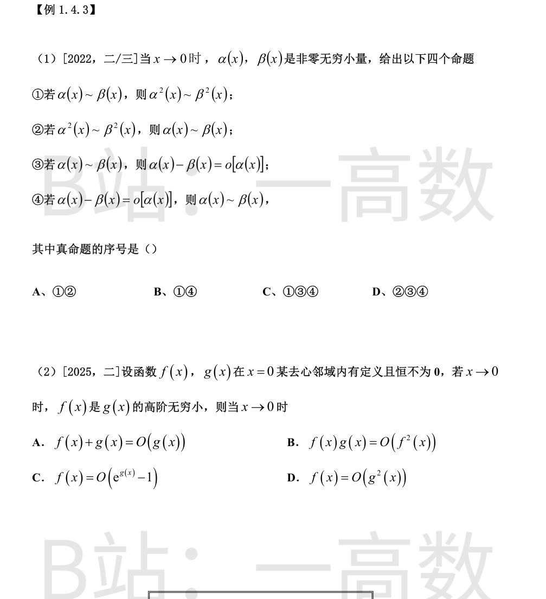
① 真：α~β 即 α/β→1，则
$$\frac{\alpha^2}{\beta^2}=\left(\frac{\alpha}{\beta}\right)^2\to 1,$$
故 α²~β²。
③ 真：$$\frac{\alpha-\beta}{\alpha}=1-\frac{\beta}{\alpha}\to 1-1=0,$$ 故 α−β=o[α]。
④ 真：α−β=o[α] 即 (α−β)/α→0，则 1−β/α→0，即 β/α→1，故 α~β。
② 假：反例取 β(x)=x, α(x)=−x，两者均为非零无穷小，α²=β²=x²，故 α²~β²；但
$$\frac{\alpha}{\beta}\equiv -1\not\to 1,$$
α 与 β 不等价。
真命题为①③④，选 C。
题设即 f/g → 0（且 g→0）。
A. (f+g)/g = f/g + 1 → 1，即 f+g 与 g **同阶**而非高阶，故「f+g 是 g 的高阶无穷小」不成立（原题记号为小 o，f+g = o(g) 不真）。
B. fg/f² = g/f → ∞，不成立。
C. 因 g→0，e^{g}−1 ~ g，故
$$\frac{f}{e^{g(x)}-1}=\frac{f}{g}\cdot\frac{g}{e^{g}-1}\to 0\cdot 1=0,$$
f 确是 e^{g}−1 的高阶无穷小（当然更有 f = O(e^{g}−1)），成立。
D. f/g² = (f/g)/g 属 0·∞ 型，未必趋于 0。反例：取 g>0, f = g^{3/2}，则 f/g = g^{1/2}→0 满足题设，但 f/g² = g^{−1/2}→∞，不成立。
选 C。注：图片印刷为 capital O；若 A 按大 O（比值有界）理解则 A 也成立，与单选矛盾。官方答案为 C，原题四个选项均用小 o 记号，按小 o 理解只有 C 正确。
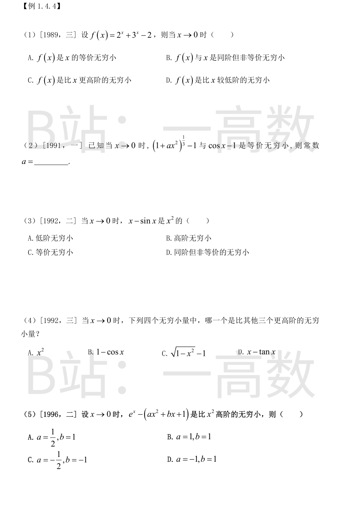
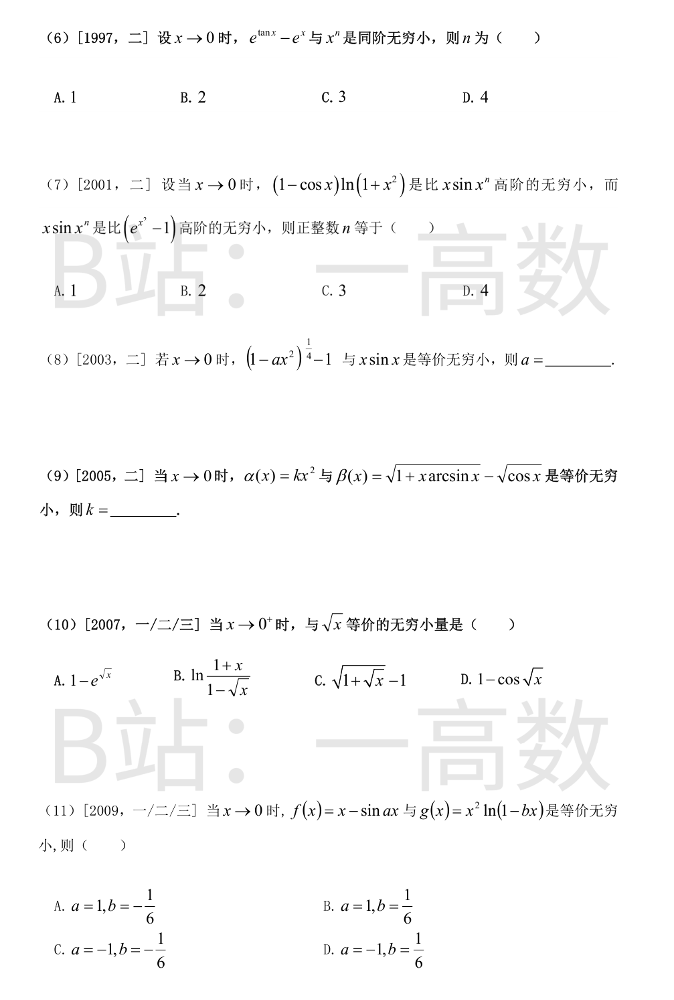
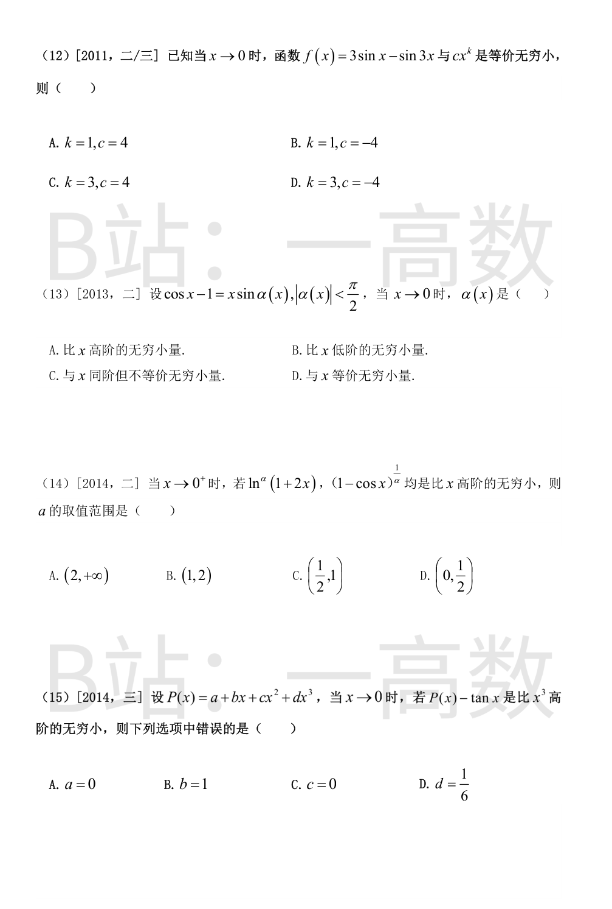
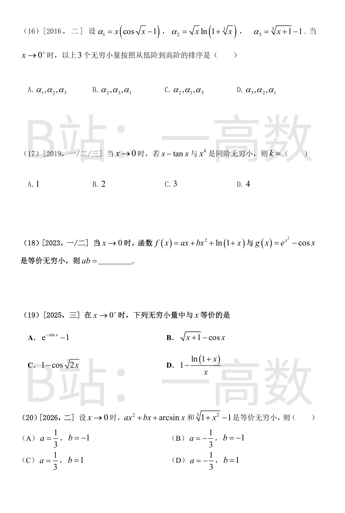
$$\lim_{x\to 0}\frac{f(x)}{x}=\lim_{x\to 0}\left[\frac{2^x-1}{x}+\frac{3^x-1}{x}\right]=\ln 2+\ln 3=\ln 6.$$
ln6 ≈ 1.79，极限非零且不为 1：极限非零 ⟹ 同阶；不等于 1 ⟹ 非等价。
故 f(x) 与 x 是同阶但非等价无穷小（f(x)~x·ln6），选 B。
x→0 时
$$(1+ax^2)^{1/3}-1\sim\frac{a}{3}x^2,\qquad \cos x-1\sim-\frac{x^2}{2}.$$
由等价性，二者主项系数相等：
$$\frac{a}{3}=-\frac{1}{2}\ \Longrightarrow\ a=-\frac{3}{2}.$$
由泰勒展开 sinx = x − x³/6 + o(x³)：
$$x-\sin x=\frac{x^3}{6}+o(x^3)\sim\frac{x^3}{6}.$$
$$\lim_{x\to 0}\frac{x-\sin x}{x^2}=\lim_{x\to 0}\frac{x^3/6}{x^2}=0,$$
是比 x² 高阶的无穷小（三阶），选 B。
分别求阶数：
$$x^2\ \text{（2 阶）};\qquad 1-\cos x\sim\frac{x^2}{2}\ \text{（2 阶）};$$
$$\sqrt{1-x^2}-1\sim-\frac{x^2}{2}\ \text{（2 阶）};$$
由 tanx = x + x³/3 + o(x³)：
$$x-\tan x\sim-\frac{x^3}{3}\ \text{（3 阶）}.$$
三阶比二阶更高，最高阶的是 x−tanx，选 D。
由 e^x = 1 + x + x²/2 + x³/6 + o(x³)：
$$e^x-(ax^2+bx+1)=(1-b)x+\left(\frac{1}{2}-a\right)x^2+\frac{x^3}{6}+o(x^3).$$
要使其为比 x² 高阶的无穷小，须一次、二次项系数均为零：
$$1-b=0\Rightarrow b=1,\qquad \frac{1}{2}-a=0\Rightarrow a=\frac{1}{2}.$$
此时该差 ~ x³/6 确为三阶。选 A。
$$e^{\tan x}-e^x=e^x\left(e^{\tan x-x}-1\right).$$
x→0 时 e^x → 1，且 e^u−1 ~ u（u = tanx − x → 0），故
$$e^{\tan x}-e^x\sim \tan x-x.$$
又由 tanx = x + x³/3 + o(x³) 得 tanx − x ~ x³/3，故
$$e^{\tan x}-e^x\sim\frac{x^3}{3},$$
与 x³ 同阶，n = 3，选 C。
各无穷小的阶：
$$(1-\cos x)\ln(1+x^2)\sim\frac{x^2}{2}\cdot x^2=\frac{x^4}{2}\ \text{（4 阶）},$$
$$x\sin x^n\sim x\cdot x^n=x^{n+1},\qquad e^{x^2}-1\sim x^2\ \text{（2 阶）}.$$
条件一：(1−cosx)ln(1+x²) 比 x sinxⁿ 高阶 ⟺ 4 > n+1；
条件二：x sinxⁿ 比 e^{x²}−1 高阶 ⟺ n+1 > 2。
故 2 < n+1 < 4，n+1 只能等于 3，n = 2，选 B。
$$(1-ax^2)^{1/4}-1\sim\frac{1}{4}\cdot(-ax^2)=-\frac{a}{4}x^2,\qquad x\sin x\sim x^2.$$
由等价性：
$$-\frac{a}{4}=1\ \Longrightarrow\ a=-4.$$
分别把两项展开到 x²：
第一项：x·arcsinx ~ x²，故
$$\sqrt{1+x\arcsin x}=1+\frac{1}{2}\,x\arcsin x+o(x^2)=1+\frac{x^2}{2}+o(x^2).$$
第二项：cosx − 1 ~ −x²/2，故
$$\sqrt{\cos x}=(\cos x)^{1/2}=1+\frac{1}{2}(\cos x-1)+o(x^2)=1-\frac{x^2}{4}+o(x^2).$$
相减：
$$\beta(x)=\left[1+\frac{x^2}{2}\right]-\left[1-\frac{x^2}{4}\right]+o(x^2)\sim\frac{3}{4}x^2.$$
由 α ~ β 得 k = 3/4。
逐项求与 √x 之比的极限：
A. 1 − e^{√x} ~ −√x，比值 → −1，不选。
C. √(1+√x) − 1 ~ (1/2)√x，比值 → 1/2，不选。
D. 1 − cos√x ~ (√x)²/2 = x/2，是 x 的一阶而非 √x 的等价量，不选。
B. 拆对数：
$$\ln\frac{1+x}{1-\sqrt x}=\ln(1+x)-\ln(1-\sqrt x)\sim x+\sqrt x\sim\sqrt x,$$
（其中 −ln(1−√x) ~ √x，ln(1+x) ~ x，两者相加低阶项 x 被吸收）比值 → 1，选 B。
先看 g：ln(1−bx) ~ −bx，故
$$g(x)=x^2\ln(1-bx)\sim -bx^3\ \text{（3 阶）}.$$
再看 f：由 sin(ax) = ax − a³x³/6 + o(x³)：
$$f(x)=x-\sin ax=(1-a)x+\frac{a^3}{6}x^3+o(x^3).$$
f 要与 g（三阶）等价，一次项必须消失：1 − a = 0 ⟹ a = 1。此时
$$f(x)\sim\frac{x^3}{6}.$$
比较系数：1/6 = −b ⟹ b = −1/6。选 A。
利用三倍角公式 sin3x = 3sinx − 4sin³x：
$$f(x)=3\sin x-\sin 3x=3\sin x-\left(3\sin x-4\sin^3 x\right)=4\sin^3 x.$$
x→0 时 sinx ~ x，故
$$f(x)\sim 4x^3.$$
即 k = 3, c = 4，选 C。（也可用泰勒展开 3sinx−sin3x = (3x−x³/2)−(3x−9x³/2)+… = 4x³+… 验证。）
由条件，
$$\sin\alpha(x)=\frac{\cos x-1}{x}\sim\frac{-x^2/2}{x}=-\frac{x}{2}\to 0.$$
因 |α(x)| < π/2 且 sinα(x) → 0，故 α(x) → 0，且
$$\alpha(x)=\arcsin\frac{\cos x-1}{x}\sim\frac{\cos x-1}{x}\sim-\frac{x}{2}.$$
于是 lim α(x)/x = −1/2：非零但不为 1，α(x) 与 x 同阶但不等价，选 C。
x→0⁺ 时：
$$\ln^a(1+2x)=\left[\ln(1+2x)\right]^a\sim(2x)^a=2^a x^a,$$
比 x 高阶 ⟺ a > 1。
$$(1-\cos x)^{1/a}\sim\left(\frac{x^2}{2}\right)^{1/a}=2^{-1/a}x^{2/a},$$
比 x 高阶 ⟺ 2/a > 1 ⟺ a < 2。
两者同时成立：1 < a < 2，选 B。
由 tanx = x + x³/3 + o(x³)：
$$P(x)-\tan x=a+(b-1)x+cx^2+\left(d-\frac{1}{3}\right)x^3+o(x^3).$$
比 x³ 高阶 ⟺ 常数项及 x, x², x³ 项系数全为零：
$$a=0,\quad b=1,\quad c=0,\quad d=\frac{1}{3}.$$
对照选项：A (a=0) 对，B (b=1) 对，C (c=0) 对，D (d=1/6) 错——应为 d = 1/3。选 D。
分别求各自的阶：
$$\alpha_1=x(\cos\sqrt x-1)\sim x\cdot\left(-\frac{x}{2}\right)=-\frac{x^2}{2}\ \text{（2 阶）},$$
$$\alpha_2=\sqrt x\,\ln(1+x^{1/3})\sim\sqrt x\cdot x^{1/3}=x^{5/6}\ \text{（5/6 阶）},$$
$$\alpha_3=(1+x)^{1/3}-1\sim\frac{x}{3}\ \text{（1 阶）}.$$
阶数比较：5/6 < 1 < 2，故从低阶到高阶排列为
$$\alpha_2,\ \alpha_3,\ \alpha_1,$$
选 B。
由 tanx = x + x³/3 + o(x³)：
$$x-\tan x=-\frac{x^3}{3}+o(x^3)\sim-\frac{x^3}{3}.$$
$$\lim_{x\to 0}\frac{x-\tan x}{x^3}=-\frac{1}{3}\ne 0,$$
与 x³ 同阶，k = 3，选 C。
先展开 g：
$$g(x)=e^{x^2}-\cos x=\left(1+x^2+\frac{x^4}{2}\right)-\left(1-\frac{x^2}{2}+\frac{x^4}{24}\right)+o(x^4)=\frac{3}{2}x^2+\frac{11}{24}x^4+o(x^4),$$
故 g ~ (3/2)x²（2 阶）。
再展开 f：
$$f(x)=ax+bx^2+\left(x-\frac{x^2}{2}+\frac{x^3}{3}+o(x^3)\right)=(a+1)x+\left(b-\frac{1}{2}\right)x^2+\frac{x^3}{3}+o(x^3).$$
f ~ g 须二者同为 2 阶且系数相同：
- 一次项为零：a + 1 = 0 ⟹ a = −1；
- 二次项系数 = 3/2：b − 1/2 = 3/2 ⟹ b = 2。
此时 f = (3/2)x² + x³/3 + o(x³) ~ (3/2)x² ~ g，成立。故
$$ab=(-1)\times 2=-2.$$
逐项求与 x 之比的极限：
A. e^{−sinx} − 1 ~ −sinx ~ −x，比值 → −1，不选。
B. 拆项：√(x+1) − cosx = (√(1+x) − 1) + (1 − cosx) ~ x/2 + x²/2 ~ x/2，比值 → 1/2，不选。
C. $$1-\cos\sqrt{2x}\sim\frac{(\sqrt{2x})^2}{2}=\frac{2x}{2}=x,$$ 比值 → 1，选 C。
D. $$1-\frac{\ln(1+x)}{x}=\frac{x-\ln(1+x)}{x}\sim\frac{x^2/2}{x}=\frac{x}{2},$$ 比值 → 1/2，不选。（其中 ln(1+x) = x − x²/2 + o(x²)。）
右端：³√(1+x²) − 1 ~ (1/3)x²（2 阶）。
左端展开 arcsinx = x + x³/6 + o(x³)：
$$ax^2+bx+\arcsin x=bx+ax^2+\frac{x^3}{6}+o(x^3).$$
要与 (1/3)x² 等价（二阶），一次项必须消去：取 b = −1，此时
$$-x+\arcsin x\sim\frac{x^3}{6}\ \text{（三阶，不影响二阶主项）},$$
左端 ~ ax²。再由等价：ax² ~ x²/3 ⟹ a = 1/3。
验证：a=1/3, b=−1 时左端 = x²/3 + x³/6 + o(x³) ~ x²/3 = 右端主项。选 A。
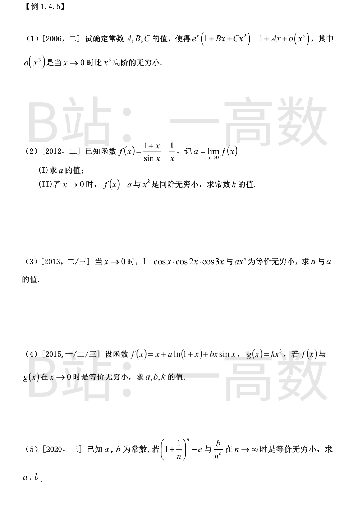
利用 $e^x=1+x+\dfrac{x^2}{2}+\dfrac{x^3}{6}+o(x^3)$，相乘（保留到 x³）：
$$e^x(1+Bx+Cx^2)=1+(B+1)x+\left(C+B+\frac{1}{2}\right)x^2+\left(C+\frac{B}{2}+\frac{1}{6}\right)x^3+o(x^3).$$
（x³ 项来源：x³/6·1 + x²/2·Bx + x·Cx²。）
与 1 + Ax + o(x³) 比较系数：
$$B+1=A,\qquad C+B+\frac{1}{2}=0,\qquad C+\frac{B}{2}+\frac{1}{6}=0.$$
后两式相减：B/2 + 1/3 = 0 ⟹ B = −2/3；
C = −B − 1/2 = 2/3 − 1/2 = 1/6；A = B + 1 = 1/3。
验算第三式：1/6 − 1/3 + 1/6 = 0 ✓。故 A = 1/3, B = −2/3, C = 1/6。
通分：
$$f(x)=\frac{x(1+x)-\sin x}{x\sin x}.$$
由 sinx = x − x³/6 + o(x⁴)：
$$x(1+x)-\sin x=x^2+\frac{x^3}{6}+o(x^4),\qquad x\sin x=x^2+o(x^3).$$
(I)
$$a=\lim_{x\to 0}f(x)=\lim_{x\to 0}\frac{x^2+x^3/6+o(x^4)}{x^2+o(x^3)}=1.$$
(II)
$$f(x)-1=\frac{\left(x^2+\frac{x^3}{6}\right)-x\sin x+o(x^4)}{x\sin x}=\frac{\frac{x^3}{6}+O(x^4)}{x^2+o(x^3)}\sim\frac{x}{6},$$
（分子中 x² − xsinx = x² − (x² − x⁴/6 + …) = O(x⁴)。）
故 f(x) − a ~ x/6，与 x 的一次幂同阶，k = 1。
积化和差：由 cosx·cos2x = (cos3x + cosx)/2，再乘 cos3x：
$$\cos x\cos 2x\cos 3x=\frac{\cos^2 3x+\cos x\cos 3x}{2}=\frac{1}{4}\left(1+\cos 6x+\cos 4x+\cos 2x\right).$$
于是
$$1-\cos x\cos 2x\cos 3x=\frac{(1-\cos 2x)+(1-\cos 4x)+(1-\cos 6x)}{4}.$$
用 1 − cos kx ~ k²x²/2：
$$\sim\frac{1}{4}\left(\frac{4x^2}{2}+\frac{16x^2}{2}+\frac{36x^2}{2}\right)=\frac{2+8+18}{4}x^2=\frac{27}{4}x^2.$$
故 n = 2, a = 27/4。
展开到三阶：ln(1+x) = x − x²/2 + x³/3 + o(x³)，x·sinx = x² + o(x³)。
$$f(x)=x+a\left(x-\frac{x^2}{2}+\frac{x^3}{3}\right)+bx^2+o(x^3)=(1+a)x+\left(b-\frac{a}{2}\right)x^2+\frac{a}{3}x^3+o(x^3).$$
f ~ kx³（三阶）⟹ 一次、二次项系数为零，三次项系数即 k：
$$1+a=0\Rightarrow a=-1;\qquad b-\frac{a}{2}=0\Rightarrow b=-\frac{1}{2};\qquad k=\frac{a}{3}=-\frac{1}{3}.$$
验证：f = −x³/3 + o(x³) ~ −x³/3 = g。
取指数：
$$\left(1+\frac{1}{n}\right)^n=\exp\left[n\ln\left(1+\frac{1}{n}\right)\right],$$
$$n\ln\left(1+\frac1n\right)=n\left(\frac{1}{n}-\frac{1}{2n^2}+\frac{1}{3n^3}+o\left(\frac{1}{n^3}\right)\right)=1-\frac{1}{2n}+\frac{1}{3n^2}+o\left(\frac{1}{n^2}\right).$$
再用 e^u = 1 + u + u²/2 + o(u²)（u = −1/(2n) + 1/(3n²)）：
$$\left(1+\frac1n\right)^n=e\left[1-\frac{1}{2n}+\left(\frac{1}{3}+\frac{1}{8}\right)\frac{1}{n^2}+o\left(\frac{1}{n^2}\right)\right]=e-\frac{e}{2n}+\frac{11e}{24n^2}+o\left(\frac{1}{n^2}\right).$$
故
$$\left(1+\frac{1}{n}\right)^n-e=-\frac{e}{2n}+o\left(\frac{1}{n}\right)\sim-\frac{e}{2}\cdot\frac{1}{n}.$$
与 b/n^a 等价：a = 1, b = −e/2。
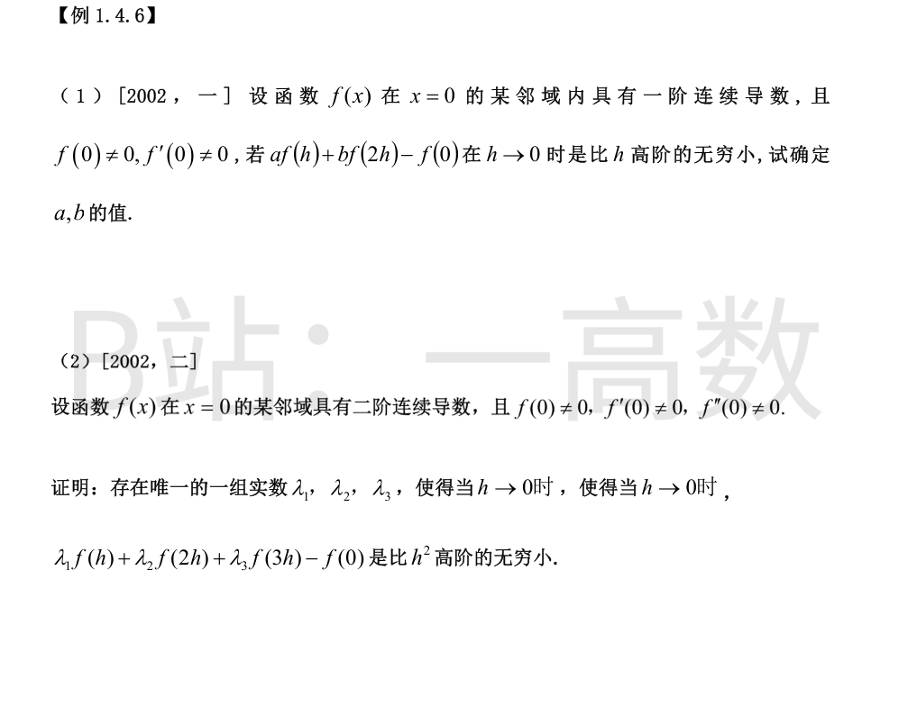
比 h 高阶的无穷小 ⟹ 函数本身趋于 0，且除以 h 也趋于 0。
第一步（常数项）：
$$\lim_{h\to 0}\left[af(h)+bf(2h)-f(0)\right]=(a+b)f(0)-f(0)=0.$$
由 f(0)≠0 得 a + b = 1。
第二步（一阶项）：由 f 有连续导数，用洛必达法则：
$$\lim_{h\to 0}\frac{af(h)+bf(2h)-f(0)}{h}=\lim_{h\to 0}\left[af'(h)+2bf'(2h)\right]=(a+2b)f'(0)=0.$$
由 f′(0)≠0 得 a + 2b = 0。
联立：
$$\begin{cases}a+b=1\\ a+2b=0\end{cases}\Longrightarrow a=2,\ b=-1.$$
**证明**：由泰勒公式（皮亚诺余项，用到二阶连续导数）：
$$f(kh)=f(0)+f'(0)kh+\frac{f''(0)}{2}k^2h^2+o(h^2),\qquad k=1,2,3.$$
代入并整理：
$$\lambda_1f(h)+\lambda_2f(2h)+\lambda_3f(3h)-f(0)$$
$$=\left(\lambda_1+\lambda_2+\lambda_3-1\right)f(0)+\left(\lambda_1+2\lambda_2+3\lambda_3\right)f'(0)h+\frac{1}{2}\left(\lambda_1+4\lambda_2+9\lambda_3\right)f''(0)h^2+o(h^2).$$
因 f(0), f′(0), f″(0) 均非零，上式为比 h² 高阶的无穷小当且仅当
$$\begin{cases}\lambda_1+\lambda_2+\lambda_3=1\\ \lambda_1+2\lambda_2+3\lambda_3=0\\ \lambda_1+4\lambda_2+9\lambda_3=0\end{cases}$$
**唯一性**：系数行列式为范德蒙德行列式
$$\begin{vmatrix}1&1&1\\1&2&3\\1&4&9\end{vmatrix}=(2-1)(3-1)(3-2)=2\ne 0,$$
由克拉默法则，方程组有唯一解，故满足要求的实数组若存在必唯一。
**存在性**（求解）：第一式减第二式：λ₂ + 2λ₃ = −1；第二式减第三式：2λ₂ + 6λ₃ = 0，即 λ₂ + 3λ₃ = 0。两式相减得 λ₃ = 1，回代得 λ₂ = −3，λ₁ = 1 − λ₂ − λ₃ = 3。
故存在唯一一组 (λ₁, λ₂, λ₃) = (3, −3, 1)。证毕。
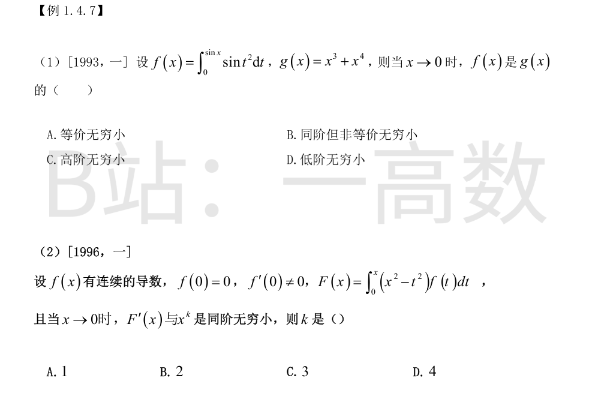
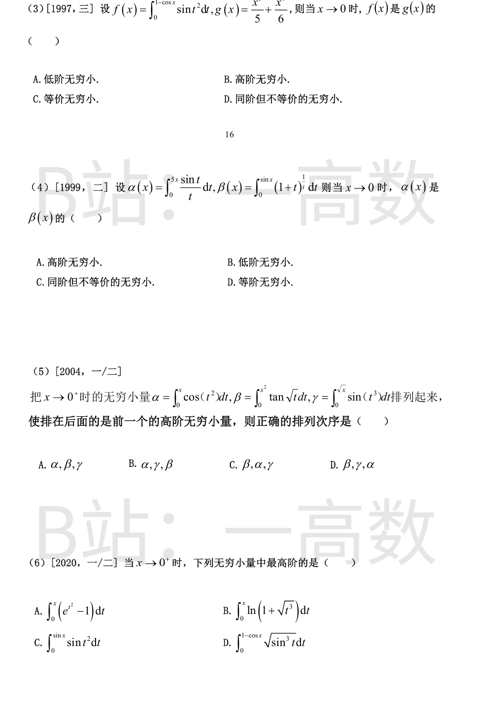
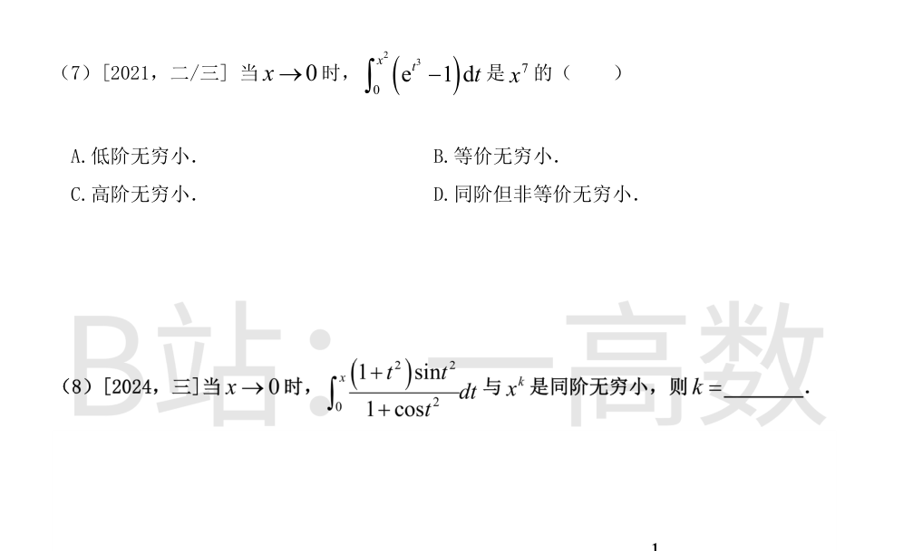
先证一般事实：由洛必达，lim_{u→0} ∫₀^u sint²dt / (u³/3) = lim sint²/u² = 1，即 ∫₀^u sint²dt ~ u³/3。
取 u = sinx ~ x：
$$f(x)\sim\frac{\sin^3 x}{3}\sim\frac{x^3}{3}\ \text{（3 阶）}.$$
$$\lim_{x\to 0}\frac{f(x)}{g(x)}=\lim_{x\to 0}\frac{x^3/3}{x^3+x^4}=\frac{1}{3}\ne 0,1.$$
极限非零有限但不为 1：同阶但非等价，选 B。
拆开被积函数（x 与 t 无关）：
$$F(x)=x^2\int_0^x f(t)\,dt-\int_0^x t^2f(t)\,dt.$$
求导（变限积分求导公式）：
$$F'(x)=2x\int_0^x f(t)\,dt+x^2f(x)-x^2f(x)=2x\int_0^x f(t)\,dt.$$
由 f(0)=0, f′(0)≠0：f(t) ~ f′(0)·t，故
$$\int_0^x f(t)\,dt\sim f'(0)\cdot\frac{x^2}{2}.$$
于是
$$F'(x)\sim 2x\cdot f'(0)\cdot\frac{x^2}{2}=f'(0)\,x^3,$$
与 x³ 同阶（f′(0)≠0），k = 3，选 C。
∫₀^u sint²dt ~ u³/3（同第(1)小题）。取 u = 1 − cosx ~ x²/2：
$$f(x)\sim\frac{1}{3}\left(\frac{x^2}{2}\right)^3=\frac{x^6}{24}\ \text{（6 阶）}.$$
$$g(x)=\frac{x^5}{5}+\frac{x^6}{6}\sim\frac{x^5}{5}\ \text{（5 阶）}.$$
$$\lim_{x\to 0}\frac{f(x)}{g(x)}=\lim_{x\to 0}\frac{x^6/24}{x^5/5}=0,$$
f 是 g 的高阶无穷小，选 B。
用变限积分求导（分子分母同阶时最便捷）：
$$\alpha'(x)=\frac{\sin 5x}{5x}\cdot 5=\frac{\sin 5x}{x}\to 5,$$
故 α(x) ~ 5x。
$$\beta'(x)=(1+\sin x)^{\frac{1}{\sin x}}\cdot\cos x\to e^1\cdot 1=e,$$
（用重要极限 (1+u)^{1/u} → e。）故 β(x) ~ ex。
$$\lim_{x\to 0}\frac{\alpha(x)}{\beta(x)}=\frac{5}{e}\ne 0,\ 1,\ \infty.$$
同阶但不等价，选 C。
分别用「被积函数等价 + 积分」求阶：
$$\alpha=\int_0^x\cos(t^2)\,dt\sim\int_0^x 1\,dt=x\ \text{（1 阶）},$$
$$\beta=\int_0^{x^2}\tan\sqrt t\,dt\sim\int_0^{x^2}\sqrt t\,dt=\frac{2}{3}t^{3/2}\Big|_0^{x^2}=\frac{2}{3}x^3\ \text{（3 阶）},$$
$$\gamma=\int_0^{\sqrt x}\sin(t^3)\,dt\sim\int_0^{\sqrt x}t^3\,dt=\frac{x^2}{4}\ \text{（2 阶）}.$$
阶数：α 为 1 阶，γ 为 2 阶，β 为 3 阶。要使排在后面的是前面的高阶无穷小，须按阶数递增排列：
$$\alpha,\ \gamma,\ \beta,$$
选 B。
逐项求阶（被积函数取等价后再积分）：
A. e^{t²}−1 ~ t²，$$\int_0^x(e^{t^2}-1)dt\sim\int_0^x t^2dt=\frac{x^3}{3}\ \text{（3 阶）};$$
B. ln(1+√(t³)) = ln(1+t^{3/2}) ~ t^{3/2}，$$\int_0^x\ln(1+\sqrt{t^3})dt\sim\int_0^x t^{3/2}dt=\frac{2}{5}x^{5/2}\ \text{（5/2 阶）};$$
C. 同 T7(1)：$$\int_0^{\sin x}\sin t^2\,dt\sim\frac{\sin^3 x}{3}\sim\frac{x^3}{3}\ \text{（3 阶）};$$
D. √(sint³) ~ t^{3/2}，记 u = 1−cosx ~ x²/2，$$\int_0^{1-\cos x}\sqrt{\sin t^3}\,dt\sim\int_0^{u}t^{3/2}dt=\frac{2}{5}u^{5/2}\sim\frac{2}{5}\left(\frac{x^2}{2}\right)^{5/2}=\frac{x^5}{10\sqrt{2}}\ \text{（5 阶）}.$$
阶数最高（5 阶）的是 D，选 D。
e^{t³} − 1 ~ t³，故
$$\int_0^{x^2}\left(e^{t^3}-1\right)dt\sim\int_0^{x^2}t^3\,dt=\frac{x^8}{4}\ \text{（8 阶）}.$$
$$\lim_{x\to 0}\frac{\int_0^{x^2}(e^{t^3}-1)dt}{x^7}=\lim_{x\to 0}\frac{x^8/4}{x^7}=0,$$
是比 x⁷ 更高阶的无穷小，选 C。
先求被积函数在 t→0 时的等价：
- 分子：(1+t²)sint² ~ 1·t² = t²；
- 分母：1 + cost² → 1 + 1 = 2；
$$\frac{(1+t^2)\sin t^2}{1+\cos t^2}\sim\frac{t^2}{2}.$$
于是
$$\int_0^x\frac{(1+t^2)\sin t^2}{1+\cos t^2}\,dt\sim\int_0^x\frac{t^2}{2}\,dt=\frac{x^3}{6}.$$
$$\lim_{x\to 0}\frac{\text{积分}}{x^3}=\frac{1}{6}\ne 0,$$
与 x³ 同阶，k = 3。
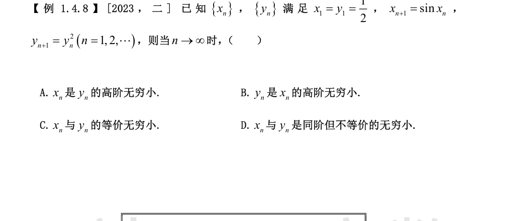
两数列均单调递减趋于 0，但速度天差地别。
**y_n 的速度**：y_{n+1} = y_n² ⟹ y_n = y₁^{2^{n-1}} = (1/2)^{2^{n-1}}，按 2 的指数幂衰减（二重指数速度）。
**x_n 的速度**：x_{n+1} = sinx_n = x_n − x_n³/6 + o(x_n³)，每步只减去约 x_n³/6，衰减极慢。考察倒数平方：
$$\frac{1}{x_{n+1}^2}=\frac{1}{x_n^2}\left(1-\frac{x_n^2}{6}+o(x_n^2)\right)^{-2}=\frac{1}{x_n^2}\left(1+\frac{x_n^2}{3}+o(x_n^2)\right)=\frac{1}{x_n^2}+\frac{1}{3}+o(1).$$
故 1/x_n² ~ n/3，即 x_n ~ √(3/n)（多项式速度）。
**比较**：
$$\frac{y_n}{x_n}\sim\frac{2^{-2^{n-1}}}{\sqrt{3/n}}\to 0,$$
即 y_n = o(x_n)：y_n 是 x_n 的高阶无穷小，选 B。
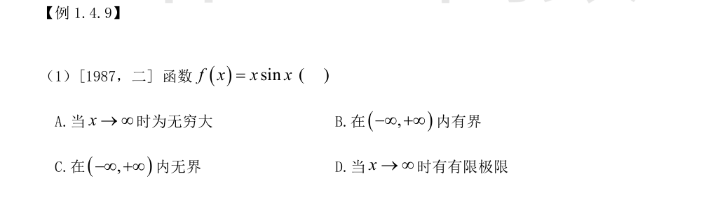
取点列 x_k = 2kπ + π/2：f(x_k) = x_k·sin(π/2) = 2kπ + π/2 → +∞，故 f 在 (−∞,+∞) 内无界——C 正确，B 错误。
取点列 z_k = kπ：f(z_k) = kπ·sin(kπ) = 0，子列极限为 0；而另一子列 x_k → ∞ 且 f(x_k) → ∞，两子列行为不同，故 x→∞ 时 f(x) 既不是无穷大（存在恒为零的子列），也无有限极限（存在趋于无穷的子列）——A、D 错误。
综上选 C。（x·sinx 是典型的「无界但非无穷大」函数。）
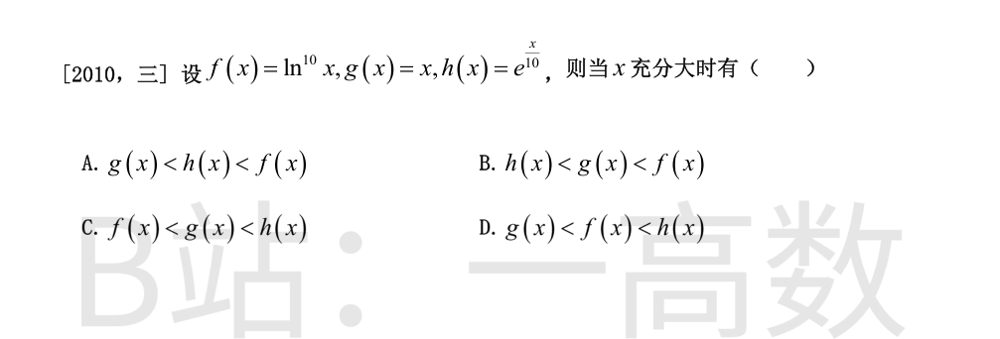
比较三类函数在 x→+∞ 时的增长速度：对数 < 幂函数 < 指数函数。
$$\lim_{x\to+\infty}\frac{\ln^{10}x}{x}=\lim_{x\to+\infty}\frac{10\ln^9 x\cdot(1/x)}{1}=\cdots=0\ \text{（洛必达或直接用阶的比较）},$$
故充分大时 ln¹⁰x < x，即 f < g。
$$\lim_{x\to+\infty}\frac{x}{e^{x/10}}=\lim_{x\to+\infty}\frac{1}{\frac{1}{10}e^{x/10}}=0,$$
故充分大时 x < e^{x/10}，即 g < h。
综上，x 充分大时 ln¹⁰x < x < e^{x/10}，即 f(x) < g(x) < h(x)，选 C。